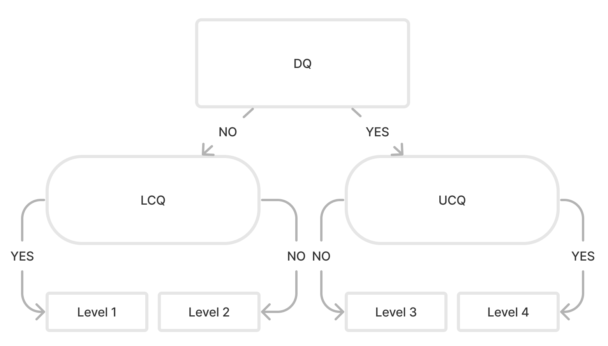
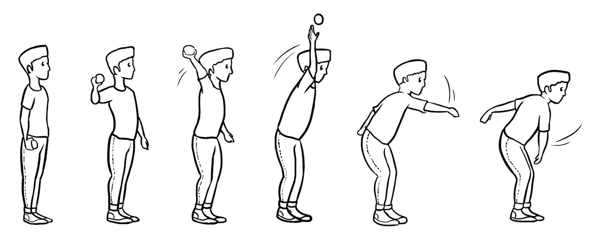
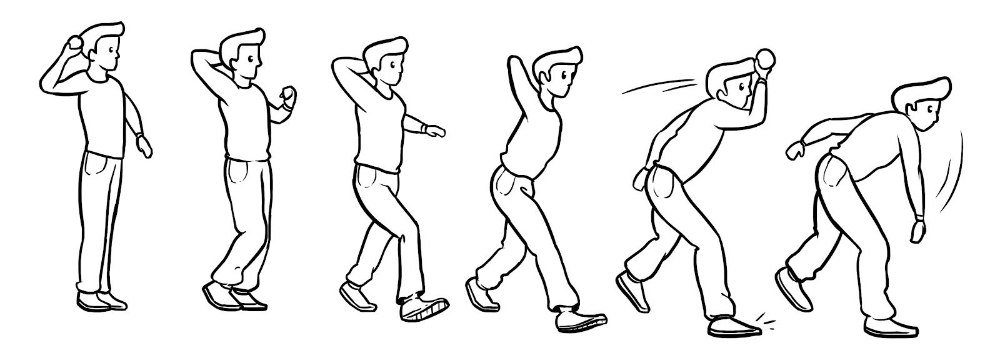
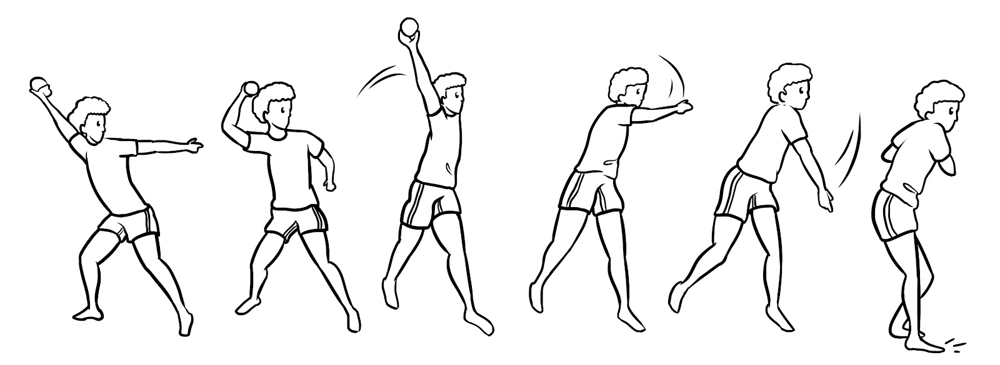
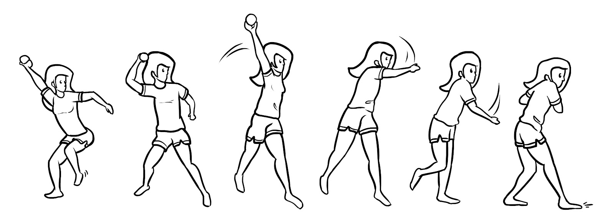

Professores de Educação Física e treinadores
Avalie uma turma inteira rapidamente, acompanhe o progresso ao longo do ano e veja se um programa está funcionando.
Novidade: o manual do usuário do FG-COMPASS já está disponível. Leia aqui.
Avaliação de habilidades motoras · 5 a 10 anos
O FG-COMPASS ajuda professores, treinadores, profissionais da saúde e pesquisadores a avaliar como as crianças executam 10 habilidades motoras do dia a dia, como arremessar, chutar e saltar, em uma escala simples de 1 a 4. A observação é feita ao vivo, sem vídeo e sem longas listas de critérios.
PDF gratuito · Validado por pesquisas · Para escolas, clínicas e laboratórios
Pergunta 1 de 2
O tronco girou para o lado do arremesso durante a preparação?
Nível 4 · Maduro
Por que isso importa
Correr, saltar, arremessar e receber são habilidades motoras fundamentais. Crianças que se movimentam bem tendem a ser mais ativas fisicamente, e as pesquisas associam essas habilidades a uma composição corporal mais saudável, a funções cognitivas como a memória de trabalho e a mais confiança ao brincar com os colegas.
Saber em que ponto a criança está, e onde ela tem dificuldade, permite ensinar o próximo passo e identificar atrasos cedo. O FG-COMPASS torna essa verificação rápida o suficiente para caber em uma aula ou sessão clínica comum.
Como funciona
Observe ao vivo, na quadra, no pátio ou na clínica. Um protocolo curto descreve a montagem, as instruções e as tentativas de cada habilidade.
A primeira pergunta indica os níveis mais baixos ou mais altos. A segunda confirma em qual nível a criança está.
Registre o nível de cada habilidade para ver o perfil da criança, acompanhar o progresso ou comparar antes e depois de um programa.
Todas as habilidades usam a mesma árvore de três perguntas. Cada criança segue um único caminho: uma pergunta-chave e depois uma pergunta de confirmação.
O FG-COMPASS é um instrumento orientado ao processo e referenciado a critério. Cada habilidade é avaliada com uma árvore de decisão composta, que combina as abordagens do Plano Observacional e dos Três Estágios para a avaliação de HMF, usando apenas três critérios-chave de desempenho extraídos de sequências de desenvolvimento validadas e hipotetizadas.

Modelo comum às dez árvores de decisão (rótulos em inglês).
O que avalia
Deslocar o corpo de um lugar para outro.
Lançar, receber e controlar uma bola.
Como ler os resultados
Exemplo: o arremesso por cima do ombro, das primeiras tentativas ao padrão maduro.




Para quem é
Avalie uma turma inteira rapidamente, acompanhe o progresso ao longo do ano e veja se um programa está funcionando.
Identifique atrasos motores cedo e planeje intervenções, com níveis claros para compartilhar com as famílias.
Um instrumento orientado ao processo e referenciado a critério, com fidedignidade e concordância com avaliadores especialistas publicadas.
As evidências
O FG-COMPASS foi desenvolvido na Universidade de Pittsburgh e teve sua fidedignidade e concordância com avaliadores especialistas testadas em estudos revisados por pares.
Ver todas as publicaçõesFG-COMPASS é a sigla, em inglês, de Furtado–Gallagher Children Observational Movement Pattern Assessment System (Sistema Furtado–Gallagher de Avaliação Observacional de Padrões de Movimento em Crianças). Antes chamado Furtado–Gallagher Computerized Observational Movement Pattern Assessment System.